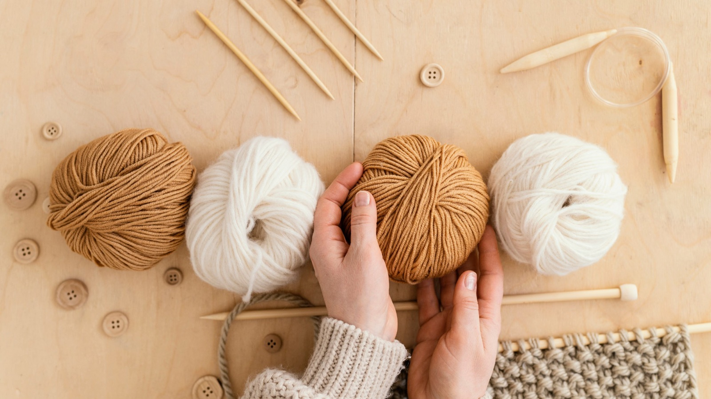
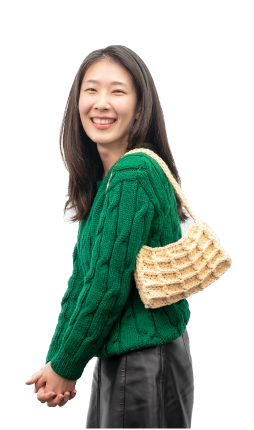
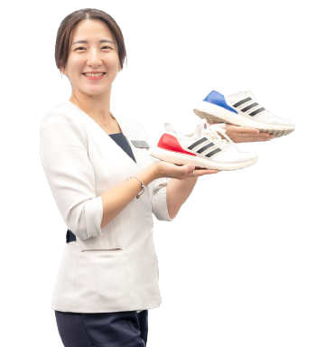
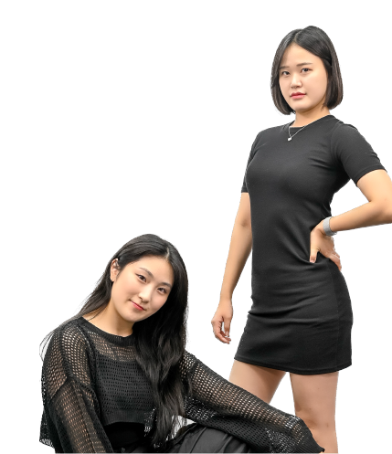
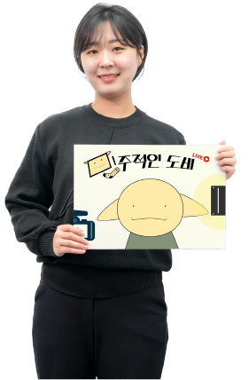
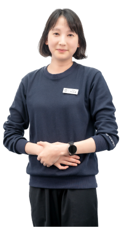
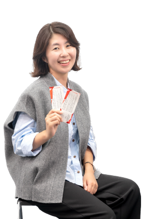

센트럴서울안과는 오랜 시간 독서 모임을 자발적으로 이어왔습니다. 지난 10여 년 동안 만들어진 구성원들의 책 읽는 문화는 이제 더 넓게, 각자의 취향을 존중한 다양한 동아리 모임으로 확장되었습니다. 구성원들이 자발적으로 만들고 스스로 참여하는 동아리! 센트럴서울안과의 동아리 모임 함께 만나 볼까요?
공통 질문 Q1 동아리 소개 · Q2 만들게 된 계기 · Q3 모임 진행 방식 · Q4 앞으로 계획
뜨개 동아리 ‘뜨개질합시다’ — 리더 이희주 부팀장

Q1 동아리 소개
‘뜨개질합시다’는 2022년 7월 개설된 동아리입니다. 코로나19 팬데믹으로 구성원들 사기가 떨어져 있을 즈음 정부의 모임 인원 제한 정책이 해제되면서 바로 동아리를 만들었습니다.
Q2 만들게 된 계기
세 가지로 꼽을 수 있습니다. 첫째는 성취감입니다. 뜨개질은 한 땀 한 땀 수놓다 보면 눈에 보이는 성취감이 있습니다. 둘째는 타 부서 구성원과의 소통입니다. 셋째는 기부입니다. 병원에서 매년 ‘이촌1동 벼룩시장’에 참여하는데, 이때 손뜨개 물품을 만들어 기부·판매하고 수익금은 의미 있는 곳에 기부합니다. 나눔의 행복을 느낄 수 있지요!
Q3 모임 진행 방식
작년 겨울 손재주가 없다고 느끼는 구성원들도 가볍게 참여할 수 있도록 ‘자이언트얀 가방 만들기’를 진행했습니다. 그때 구성원의 절반 정도가 신청해 주 2회 클래스를 진행한 기억이 있답니다. 현재는 주 1회 만나서 함께 뜨개질합니다.
Q4 앞으로 계획
뜨개 기법을 배워두면 여러 작품을 만들 수 있고, 한 번 배워두면 언제든 다시 시작할 수 있지요. 올겨울 찬 바람 속 손뜨개로 온기를 나눠 보실래요?
러닝 동아리 ‘센.달’ — 리더 유상효 부팀장

Q1 동아리 소개
‘센.달’은 ‘센트럴 달리자’의 줄임말입니다. 여름 신발인 ‘샌들’이 생각나 중의적인 의미로 동아리 이름을 정했습니다.
Q2 만들게 된 계기
달리기를 좋아하는 제가 같이 뛰고 싶어서 만든 동아리입니다. 혼자 뛰는 것보다 함께 뛰면 더 멀리 갈 수 있지요. 퇴근 후 함께 이촌 한강공원을 뛰면서 아름다운 야경을 감상하고 체력도 강화할 수 있습니다. 동아리 활동을 하면서 구성원끼리 서로 알아가다 보니 이해할 수 있는 폭이 넓어졌습니다.
Q3 모임 진행 방식
2주에 한 번씩 달립니다. 7~8월, 12~1월은 너무 덥거나 추워 방학 기간입니다. 대신 클라이밍, 원데이 점핑 다이어트 등 실내 활동을 월 1회 진행합니다.
Q4 앞으로 계획
기회가 된다면 내년에 10km 마라톤대회에 참가해 볼 예정입니다. 저희와 함께 힘차게 달려볼까요?
댄스 동아리 ‘EYE LEADER’ — 리더 현서영 & 서포터 정유담 선생님

Q1 동아리 소개
센트럴서울안과 최초의 댄스 동아리입니다. 고객분들은 항상 유니폼을 입고 일하는 저희를 떠올리실 텐데요. 저희의 또 다른 모습, 상상되시나요?
Q2 만들게 된 계기
첫 시작은 단순한 취미 공유였습니다. 종일 고객 응대를 하며 말을 많이 하는 직무라 스트레스를 풀 수 있는 것이 필요했습니다. 신나는 음악과 함께 몸을 움직여 땀 흘리는 ‘댄스’가 제격인 것 같아 동아리 개설까지 하게 되었습니다.
Q3 모임 진행 방식
모임 일주일 전 한 분의 선생님과 제가 안무 연습 시간을 가진 뒤, 모임 때 멤버에게 안무를 알려주는 방식입니다. 2주에 한 번, 두 시간씩 모이는데 그 순간만큼은 어느 유명한 아이돌 그룹 멤버로 변신하지요!
Q4 앞으로 계획
첫 모임 전 걱정했는데, 예상 밖으로 너무 열정적이었습니다. ‘우리 구성원분들 이런 재능을 숨기고 있었다니!’ 하고 놀라기도 했습니다. 앞으로도 즐겁게 리듬을 같이 타봐요!
방송 동아리 ‘민주적인 도비’ — 리더 이민주 팀장

Q1 동아리 소개
유튜브 라이브 방송을 운영하며 새로운 소통의 장을 마련하고 있습니다.
Q2 만들게 된 계기
점점 개인 생활화되면서 소통의 기회가 줄어드는 것 같습니다. 라이브 방송을 통해 조직 내 소통과 협업, 구성원 간 긍정적 관계를 유지하고 싶었습니다. 구성원들의 마음을 토닥여 주는 사내 방송이 되고 싶습니다.
Q3 모임 진행 방식
점심시간을 활용해 라이브 방송을 운영 중입니다. 병원의 이슈부터 식당 정보, 연애·업무 스트레스 상담, 랜덤 음악 퀴즈까지 다양한 코너가 이어집니다.
Q4 앞으로 계획
일과 중 잠시 쉬어가는 점심시간, 구성원분의 감성을 만져 드릴게요. 앞으로도 볼륨을 높여 보아요!
봉사 동아리 ‘온(溫)’ — 이샤론 팀장

Q1 동아리 소개
이웃에게 따뜻한 마음, 선한 나눔을 실천하는 동아리입니다. 멤버가 각자 가진 재능과 기술로 주변 이웃에게 나눔을 실천합니다.
Q3 활동
지난 10월 ‘이촌1동 벼룩시장’ 때 뜨개 동아리와 연합해 손뜨개 물품을 기부·판매했습니다. 가장 큰 활동은 국제 실명구호 NGO ‘비전케어’와 함께하는 ‘비전아이캠프’입니다. 취약계층을 위한 기부, 세계 헌혈의 날 헌혈증 기부, 겨울철 연탄 봉사 등 온기가 필요한 곳에 마음을 나눕니다.
Q4 앞으로 계획
사랑의 온도를 함께 높여 보아요!
문화 동아리 ‘센트관극’ — 김민정 실장

Q1 동아리 소개
문화생활을 함께 즐기는 동아리입니다. 함께 문화생활을 하고 서로의 감상을 나누며 인생을 더욱 풍요롭게 만들고 있습니다.
Q3 모임 진행 방식
연 1회 전 구성원과 함께 콘서트, 뮤지컬 같은 엔터테인먼트를 즐깁니다.
Q4 앞으로 계획
다양하고 흥미로운 활동으로 재미있고 건강한 조직을 만들어 가기 위해 노력하겠습니다.
독서 동아리 ‘센트럴북파크’ — 안혜인 부팀장
Q1 동아리 소개
책 읽는 사람, 책 읽을 사람, 혼자서는 책 못 읽는 사람 모두 모이세요! 함께 책 읽어요.
Q2 만들게 된 계기
‘책 한 권 구매했는데, 한 권을 다 읽는 것이 왜 이렇게 힘들죠?’ 네, 제가 그랬습니다. 그래서 만들었습니다. 같이 읽다 보면 한 권 다 읽을 수 있지 않을까요?
Q3·Q4 진행 방식과 계획
책 속 좋은 문장을 끄적거리는 ‘끄.독Day’, 맥주 한잔하며 생각을 나누는 ‘북맥Day’, 책방투어 ‘책 따라 산책하기’, 일 년에 한 번 ‘단편 독후감 대회’를 계획 중입니다. 독서인으로 거듭나는 그날까지, 우리 책 같이 읽어볼까요!